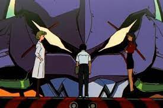
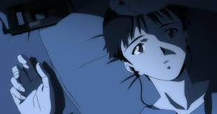
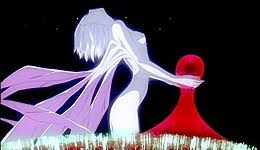

In 2015, fifteen years after a global cataclysm known as the Second Impact, teenager Shinji Ikari is summoned to the futuristic city of Tokyo-3 by his estranged father Gendo Ikari, director of the special paramilitary force Nerv. Shinji witnesses United Nations forces battling an Angel, one of a race of giant monstrous beings whose awakening was foretold by the Dead Sea Scrolls. Because of the Angels' near-impenetrable force-fields, Nerv's giant Evangelion bio-machines, synchronized to the nervous systems of their pilots and possessing their own force-fields, are the only weapons capable of keeping the Angels from annihilating humanity. Nerv officer Misato Katsuragi escorts Shinji into the Nerv complex beneath the city, where his father pressures him into piloting the Evangelion Unit-01 against the Angel. Without training, Shinji is quickly overwhelmed in the battle, causing the Evangelion to go berserk and savagely kill the Angel on its own.

Following hospitalization, Shinji moves in with Misato and settles into life in Tokyo-3. In his second battle, Shinji destroys an Angel but runs away afterward, distraught. Misato confronts Shinji and he decides to remain a pilot. The Nerv crew and Shinji must then battle and defeat the remaining fourteen Angels to prevent the Third Impact, a global cataclysm that would destroy the world. Evangelion Unit-00 is repaired shortly afterward. Shinji tries to befriend its pilot, the mysterious, socially isolated teenage girl Rei Ayanami. With Rei's help, Shinji defeats another Angel. They are then joined by the pilot of Evangelion Unit-02, the multitalented but insufferable teenager Asuka Langley Sōryu, who is German-Japanese-American. Together, the three of them manage to defeat several Angels. As Shinji adjusts to his new role as a pilot, he gradually becomes more confident and self-assured. Asuka moves in with Shinji, and they begin to develop confusing feelings for one another, kissing at her provocation.

After being absorbed by an Angel, Shinji breaks free thanks to Eva acting on its own. He is later forced to fight an infected Evangelion Unit-03 and watches its pilot, his friend and classmate Toji Suzuhara, become incapacitated and permanently disabled. Asuka loses her self-confidence following a defeat and spirals into depression. This is worsened by her next fight, against an Angel which attacks her mind and forces her to relive her worst fears and childhood trauma, resulting in a mental breakdown. In the next battle, Rei self-destructs Unit-00 and dies to save Shinji's life. Misato and Shinji visit the hospital where they find Rei alive but claiming she is "the third Rei". Misato forces scientist Ritsuko Akagi to reveal the dark secrets of Nerv, the Evangelion boneyard, and the Dummy Plug system which operates using clones of Rei, who was herself created with the DNA of Shinji's mother, Yui Ikari. This succession of events leaves Shinji emotionally scarred and alienated from the rest of the characters. Kaworu Nagisa replaces the catatonic Asuka as the pilot of Unit-02. Kaworu, who initially befriends Shinji and gains his trust, is in truth the final foretold Angel, Tabris. Kaworu fights Shinji, then realizes that he must die if humanity is to survive and asks Shinji to kill him. Shinji hesitates but eventually kills Kaworu; the event makes Shinji overridden with guilt.

After the final Angel is defeated, Gendo triggers the "Human Instrumentality Project", a forced evolution of humanity in which the souls of all mankind are merged for benevolent purposes, believing that if unified, humanity could finally overcome the loneliness and alienation that has eternally plagued mankind. Shinji's soul grapples with the reason for his existence and reaches an epiphany that he needs others to thrive, enabling him to destroy the wall of negative emotions that torment him and reunite with the others, who congratulate him.